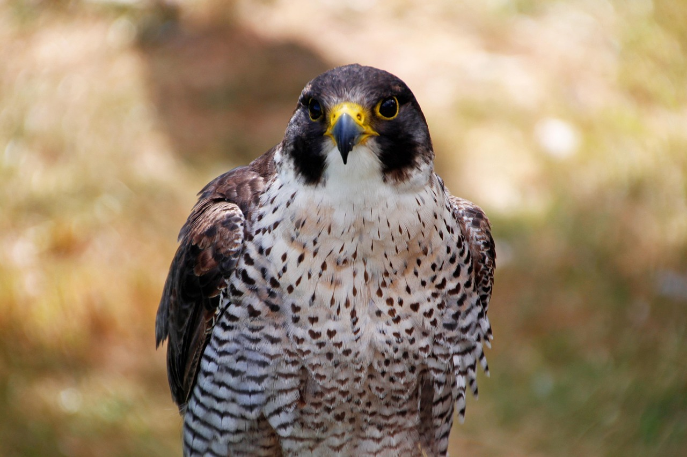

Welcome to my HTML website! This site is all about birds of prey. In watching many videos and documentaries, birds of prey quickly became one of my favorite type of birds! They are constantly hunting, and their precise movements and flight is truly astonishing!
Feel free to navigate this site, as it is still a work in progress. I am adding more birds of prey constantly! Always feel free to check back in. You can check out the quick details on our growing list, from the Peregrine Falcon to the huge Bald Eagle. On this site, I am focusing on their habitats, what they eat, and how they survive in the wild.
Check out my Raptor Profiles page to see a breakdown of their wingspans and hunting styles.